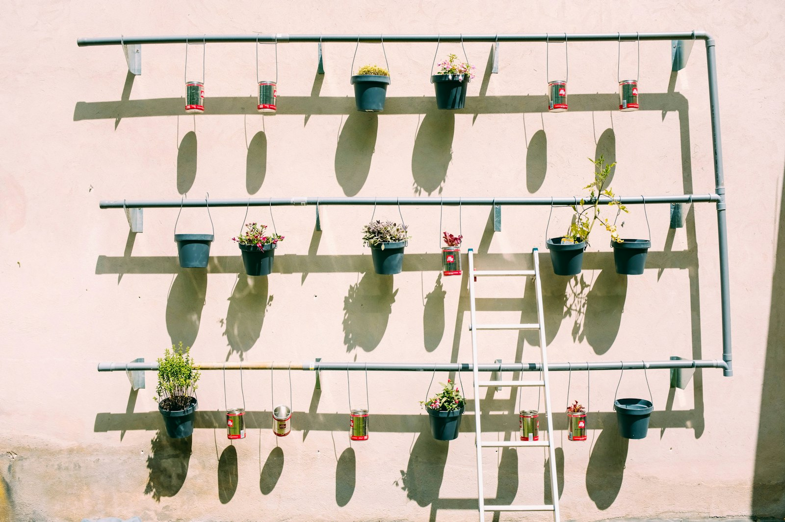
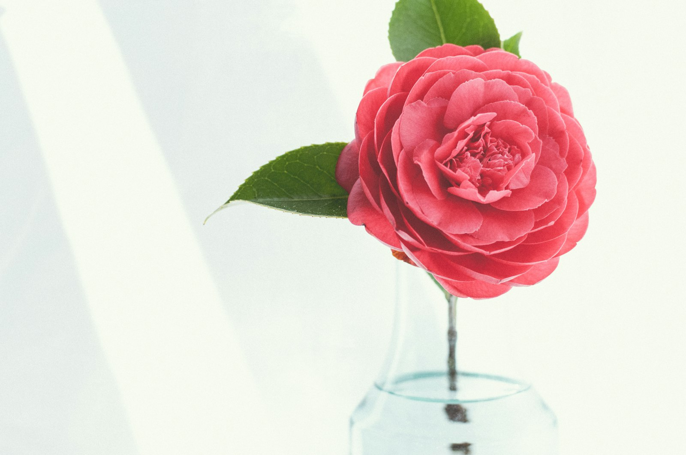

Eleanor Whitfield
Master DyerHand-dyed wool shawl — "Garden Vines"






I started this shawl on the first warm morning of February, sitting on the back porch with my grandmother's wooden swift and a mug of chicory coffee. The yarn is a fingering-weight Bluefaced Leicester I dyed in three baths — madder root for the dusty rose, weld for the soft gold, and a logwood overdye for the deep plum edge.
The "Garden Vines" stitch pattern is one I charted last winter, inspired by the wisteria that climbs the trellis above my dye station. It looks complicated, but once you read the second repeat you'll have it by heart. I worked on it for six weeks, mostly evenings, and blocked it on the dining room table over two damp towels. It's a generous wrap — about 72 inches across the top edge — and it weighs almost nothing.
Gifted to my daughter for her 40th birthday. She cried. I cried. The cat tried to sit on it before we could photograph it. A good morning, all told.
Materials & pattern steps
Pattern steps
Total time: about six weeks of evenings · finished size 72" × 28"
Scour and mordant the yarn
Wind the cream BFL into open hanks tied loosely in four places. Soak overnight in warm water with a teaspoon of mild dish soap, rinse gently, then simmer in an alum bath at 180°F for one hour. Cool overnight in the pot — never wring.
Build the madder dye bath
Soak the chopped madder root for 24 hours, then bring to a gentle simmer below 180°F to keep the color rosy rather than brick. Add the mordanted yarn and let it sit a full afternoon. Pull at the shade you love — it will dry a touch lighter.
Overlay with weld for the gold heart
Reserve about a third of the rose yarn for the body. Move the rest through a weld bath for ten to fifteen minutes — long enough to warm the rose into a honeyed coral. This is the color of the vine motifs.
Cast on and establish the spine
Garter-tab cast on with the rose yarn: 3 stitches, knit 6 rows, pick up 3 along the side, then 3 from the cast-on edge. Place markers around a single center stitch. Work the set-up row from chart A on the next page.
Work the vine repeat (chart B, ×9)
Switch to the coral skein at row 21. Each repeat adds eight stitches per side and grows the leaves outward. Read the chart from right to left on the right side, left to right on the wrong side. Slip the first stitch of every row purlwise.
Add the plum edging
Dye the final 200 yards in a quick logwood bath for the deep plum border. Work chart C — a 12-row scalloped edge with nupps every eight stitches. Bind off loosely with a stretchy sewn bind-off so the points can open during blocking.
Wet block, pin, and let it rest
Soak twenty minutes in cool water with a drop of wool wash. Roll in a towel and press out the water. Thread blocking wires along the top and scalloped edges, then pin every point. Leave 48 hours, turning once. Don't rush this — the lace only opens with patience.
Comments (14)
Oh Eleanor, this is breathtaking. The rosy gold in the center looks exactly like the morning light on my front hedge in October. Thank you for sharing the madder timings — I always pull mine too brick.
As a woodworker who started knitting last winter, I'm in awe of the geometry here. Could the spine be worked top-down instead? My wrists prefer the lighter weight of a smaller piece in the lap.
I grew weld in my pollinator garden last summer specifically because of your post in October. Three plants gave me more than enough for a sweater's worth of yarn. Thank you for that nudge, Eleanor — you turned my whole yard yellow in the best way.
Saved to my scrapbook. My granddaughter has been asking for a wrap for graduation in May and I've been waiting for the right pattern. This is the one.
A question about the bind-off — I always lose count on stretchy sewn bind-offs and end up too tight at the points. Do you place a marker every repeat, or just count by feel? My hands are not as quick as they used to be.
@Constance — markers every repeat, every time. I use the little brass ring ones with the velvet ribbon so they're easy to slip on my needle without snagging the lace. I'll write up a video next week.
The photograph beside the teacup is just the loveliest thing I've seen on this site in a long while. Reminded me of my mother's parlor. Thank you for that.
Eleanor, would you consider teaching the dye portion as a weekend workshop in the fall? I'd drive down from Knoxville. We've got a small group at the Friendship Knitters and we'd fill a class easily.